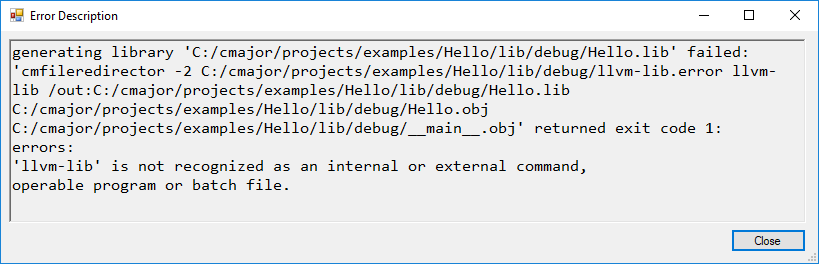
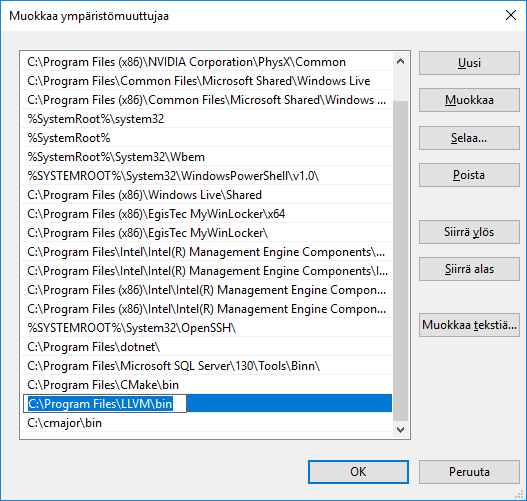

Exit Visual Studio.
Go to C:\cmajor\vs directory and double click the cmajor.vsix Visual Studio extension, or right-click it and select Open.

VSIX installer opens. Click the Install button:

Installation complete:

Download the setup program and run it. You can specify installation directory that is by default C:\cmajor. Note: the compiler needs write access to installation directory and its subdirectories, so C:\Program Files\ is not a good place to install. The setup creates an environment variable CMAJOR_ROOT that points to the installation directory and adds the CMAJOR_ROOT\bin directory to PATH. The setup adds a shortcut to CmajorDevEnv (IDE) to the desktop.


The following error occurs in Cmajor IDE when LLVM tools are not found from System PATH environment variable:
Add LLVM\bin directory to PATH:
It's assumed that you have a working Visual Studio version installed.
Exit Visual Studio.
Go to C:\cmajor\vs directory and double click the cmajor.vsix Visual Studio extension, or right-click it and select Open.
VSIX installer opens. Click the Install button:
Installation complete:
Open command prompt to the C:\cmajor\vs directory for example by typing cmd to the folder line of the Windows Exporer and pressing enter:

Run CreateCmajorCps.

Cmajor project system installation is now complete.
Here's a tour of features of the extension.
Select Tools | Extensions and Updates... menu item in Visual Studio.
Click the Uninstall button of the Cmajor Project Type VSIX item.

Exit Visual Studio and then click the Modify button.

Extension uninstalled:

The Cmajor tools need the following libraries to be installed:
These libraries can be installed by using the package manager of your distro (for example apt-get on Ubuntu) or built and installed from sources.
Sections 2.1, 2.2 and 2.3 describe alternative ways of installing Cmajor under Linux.
C:\>ubuntu
slaakko@ACER:~$
sudo update
sudo upgrade
sudo apt-get install gcc g++ make cmake
# LLVM:
wget http://releases.llvm.org/7.0.0/llvm-7.0.0.src.tar.xz
tar --extract --xz -f llvm-7.0.0.src.tar.xz
# Clang:
wget http://releases.llvm.org/7.0.0/cfe-7.0.0.src.tar.xz
tar --extract --xz -f cfe-7.0.0.src.tar.xz
# move cfe-7.0.0.src directory under llvm-7.0.0.src/tools with name 'clang'
mv cfe-7.0.0.src llvm-7.0.0.src/tools/clang
# libcxx
wget http://releases.llvm.org/7.0.0/libcxx-7.0.0.src.tar.xz
tar --extract --xz -f libcxx-7.0.0.src.tar.xz
# move libcxx-7.0.0.src directory under llvm-7.0.0.src/tools with name 'libcxx'
mv libcxx-7.0.0.src llvm-7.0.0.src/tools/libxx
# libcxxabi
wget http://releases.llvm.org/7.0.0/libcxxabi-7.0.0.src.tar.xz
tar --extract --xz -f libcxxabi-7.0.0.src.tar.xz
# move libcxxabi-7.0.0.src directory under llvm-7.0.0.src/tools with name 'libcxxabi'
mv libcxxabi-7.0.0.src llvm-7.0.0.src/tools/libcxxabi
# lld:
wget http://releases.llvm.org/7.0.0/lld-7.0.0.src.tar.xz
tar --extract --xz -f lld-7.0.0.src.tar.xz
# move lld-7.0.0.src directory under llvm-7.0.0.src/tools with name 'lld'
mv lld-7.0.0.src llvm-7.0.0.src/tools/lld
cd llvm-7.0.0.src
mkdir build
cd build
cmake -DCMAKE_BUILD_TYPE="Release" -DLLVM_TARGETS_TO_BUILD="X86" -DLLVM_ENABLE_EH=ON -DLLVM_ENABLE_RTTI=ON ..
cmake --build .
sudo cmake --build . --target install
sudo apt-get install zlib1g-dev libbz2-dev libgnutls28-dev libboost-all-dev libtinfo-dev
wget https://sourceforge.net/projects/cmajor/files/3.2.0/cmajor-3.2.0-src.tar.bz2
tar xjf cmajor-3.2.0-src.tar.bz2
export CMAJOR_ROOT=~/cmajor-3.2.0/cmajor
export LD_LIBRARY_PATH=/usr/lib:/usr/lib/x86_64-linux-gnu:/usr/local/lib
cd ~/cmajor-3.2.0/cmajor
make
sudo make install
make sys
cd projects/examples/Hello
cmc -v Hello.cmp
slaakko@ACER:~/cmajor-3.2.0/cmajor/projects/examples/Hello$ bin/debug/Hello
Hello, world!